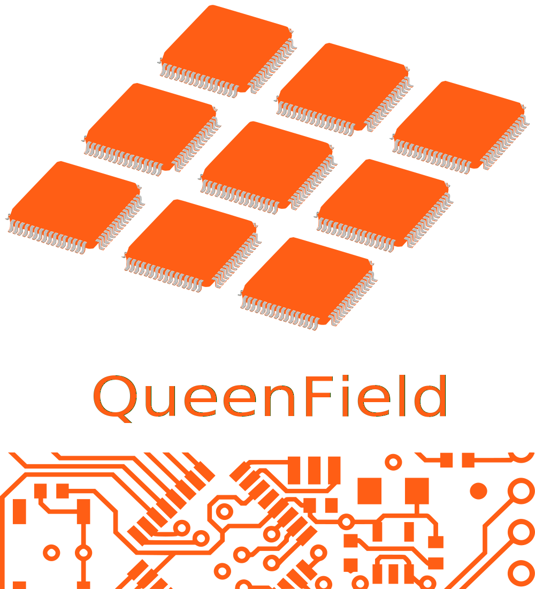

About
Home / About
Who Am I
I am a HARDWARE/SOFTWARE Engineer
Paco Reina Campo
I am the Founder and Electronic (Hardware and Software) Engineer at QueenField since September, 2014. It is an online Open Source Hardware project developed with Open Source EDA Tools and Open Standard Cells.
I am an Electronic Engineer with more than five years of hardware and software systems experience, specialized in digital design and verification (ASIC, FPGA), with emphasis on Hardware Description Languages ((System)Verilog, VHDL). Focused on the design, verification, and simulation of Integrated Circuits and Printed Circuit Boards.
Cores Inside QueenField Devices
Open Source Hardware Instruction Set Architectures running inside Digital Designs

Open ISA RISC-V
The RISC-V implementation has a 32/64/128 bit Microarchitecture, 6 stages data pipeline and an Instruction Set Architecture based on Reduced Instruction Set Computer. Compatible with AMBA and Wishbone Buses. For Researching and Developing.
Open ISA OpenRISC
The OpenRISC implementation has a 32/64 bit Microarchitecture, 5 stages data pipeline and an Instruction Set Architecture based on Reduced Instruction Set Computer. Compatible with Wishbone Bus. Only For Researching.
Open ISA MSP430
The MSP430 implementation has a 16 bit Microarchitecture, 3 stages data pipeline and an Instruction Set Architecture based on Reduced Instruction Set Computer. Compatible with Wishbone Bus. Only For Researching.

Why Choose QueenField
More than 5 year experience in Hardware and Software Systems
ASIC & FPGA implementations described in VHDL & (System)Verilog, simulated and synthesized with open source tools and printed with open standard cells.
Mixed Implementations
Digital designs implemented in VHDL and SystemVerilog.
UVM-OSVVM and Formal Verification
Digital designs simulated and verified using universal and formal methods.
100% Open Hardware
Open Source Hardware Descriptions and Open Source Tools used.